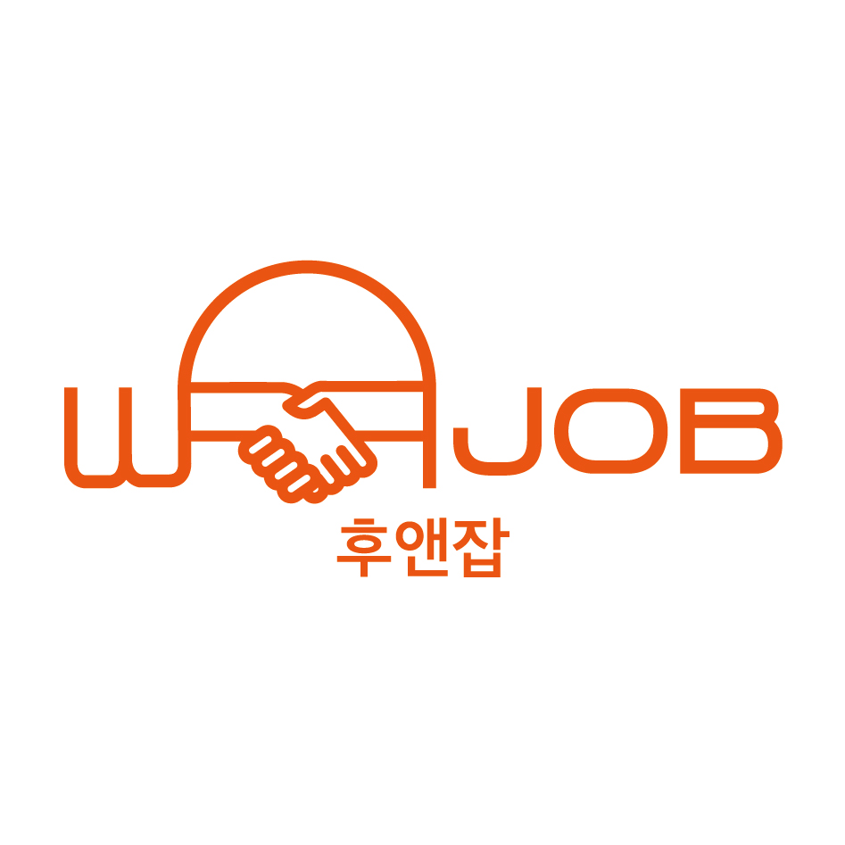
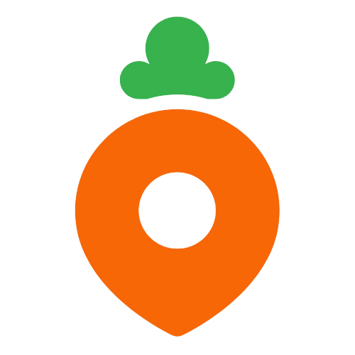

안녕하세요.
제품이 아니라 성공을 만드는 창업가 (PO/PM)
스타트업 창업을 시작으로 당근마켓, 자리톡 PO를 거치며 고객의 진짜 문제를 발굴하고 비즈니스 임팩트로 연결해 왔습니다.
단순한 기능 개선에 머물기보다 제품 구조를 재정의해 폭발적인 성장을 이끄는 데 강점이 있습니다. 가설–실험–검증 사이클을 빠르게 회전시키며 PMF에 도달하는 과정을 즐기고, 데이터와 사용자의 목소리로 의사결정의 정확도를 높입니다.
기획과 사업의 관성에 끊임없이 의문을 던지며, 데이터라는 공용 언어로 팀의 방향을 정렬합니다. 급변하는 환경에서도 유연하게 최적의 경로를 찾아 목표를 달성합니다.
회사에서 진행한 주요 업무와 성과

2021.03 – 2024.03 · 3년
고객과 직업인을 연결하는 1:1 직업체험 매칭 플랫폼 '후앤잡'을 창업해 3년간 이끌었습니다. 100명 이상의 인터뷰로 문제를 검증하고 서비스와 BM을 구축해 누적매출 5억 원, 가입자 7만 명, 매칭 1,620건을 달성했으며 다양한 프로그램에 선정됐습니다. 이후 성장 한계로 전략적 종료를 결정했고, 이 경험은 가설–검증–학습 사이클에 대한 관심으로 이어져 현재 PO로서의 커리어의 토대가 되었습니다.

2024.04 – 2024.07 · 4개월
누적 가입자 3,500만 명의 당근마켓에서 Operation Manager로 근무하며 프로덕트 개선, A/B 테스트, 신규 서비스 운영 등 다양한 프로젝트에 참여했습니다. 유저 VOC를 정량·정성 데이터로 분석해 문제를 정의하고, PRD 수립부터 실험–검증–회고까지의 사이클을 트래픽이 큰 서비스에서 직접 경험했습니다. 신규 기능의 운영정책과 이용약관을 설계해 엣지 케이스를 사전에 방지하며 안정적으로 배포하는 역할도 수행했습니다.
2024.08 – 현재 · 2년 2개월
500만 유저가 사용하는 임대관리 앱 '자리톡'에 신규 중개서비스의 PO로 합류해, 부동산 시장에서 0 to 1을 만들어가고 있습니다. 현상파악부터 가설수립, 실험, 레슨런까지의 과정을 1-Pager로 구조화해 팀 협업을 리드하며 공급–수요–중개 문제를 해결해 합류 후 약 5배의 성장을 이끌었습니다. 신규 BM '자리스테이'의 0 to 1도 함께 리드하며 사업 기획부터 제품 개발, 조직 운영까지 스타트업의 전 과정을 이끌고 있습니다.
[프로젝트에 대한 설명이 들어갑니다.]
21%p
부동산 매물
등록률 개선
5%p
자리스테이
결제전환율 개선
32.7%p
자리스테이
호스트 응답률 개선
18%p↓
예약관리
VOC 문의 감소
10%
중고차 구매동행
신청율
11%
중고차 대리진단
신청율
8.7%p
직업체험
구매전환율 개선
3배
그로스 프로젝트
매출 성장